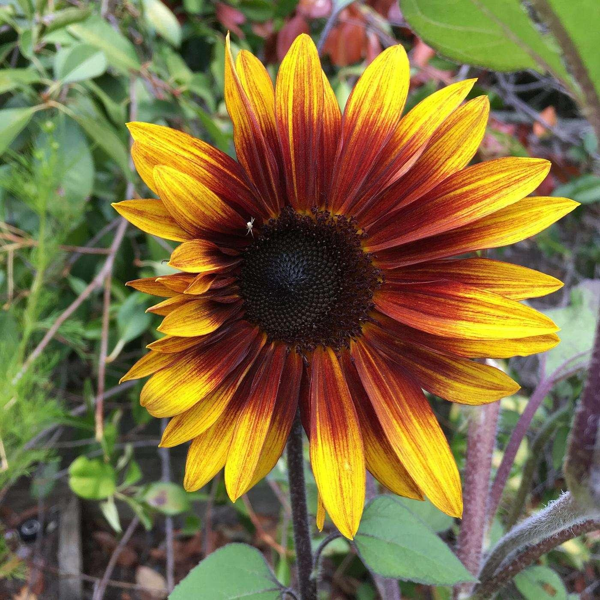

店のこと
布団圧縮袋の部位の配置図
お店の詳しい情報は準備中です。ここでは、制作側が考えたデザインの考え方を紹介します。


制作側の連想
番号は、部位の番号
ホームの図にある1〜6の番号は、それぞれ布団圧縮袋の部位の名前に対応します。布団圧縮袋の部位を図にしたもので、制作側の連想です。お店の理念・由来とは無関係で、実在の製品の仕様を示すものでもありません。
1袋本体
布団や衣類を入れる、透明で丈夫なフィルムの袋。中身が見えるものが多い。
2ジッパー
袋の口を閉じる、細い溝のかみ合わせ。空気が漏れにくいよう、二本線になっていることがある。
3スライダー
ジッパーの上を左右に動かして、口を開け閉めする小さな留め具。
4バルブ
掃除機のノズルを当てて空気を抜く、小さな丸い口。抜いたあとは空気が戻りにくい作り。
5エンボス
袋の内側にある、細かな凹凸の筋。ぴったり貼りついても、空気の通り道が残る。
6シール部
袋のふちを熱で貼り合わせた、細い帯の部分。
写真(イメージ)
写真(イメージ)





写真はイメージです。お店のものではありません。